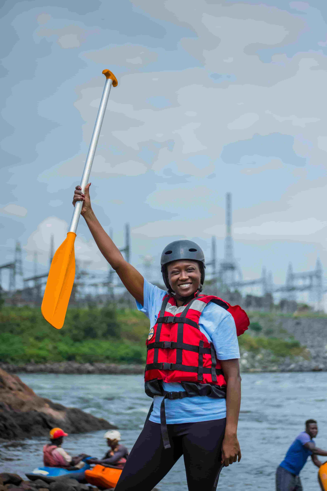

Our purpose is to ignite adventurous spirits by connecting people to wild rivers and unforgettable team experiences. Our mission is to deliver safe, guided white-water rafting adventures with expert guides, sustainable practices, and local stewardship. Creed: Respect the river, trust your crew, embrace the challenge, leave no trace. Motto: Ride the current, find your wild.